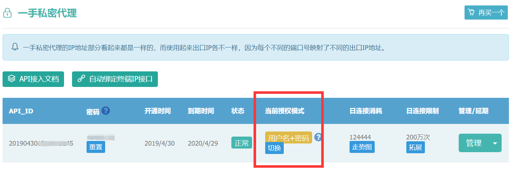

手头一个小活儿是爬竞品网站数据。使用webmagic来实现。光公司ip不行，被封了就会影响业务正常访问。刚好公司另一个项目购买了代理IP资源“站大爷”，那个项目夭折了，于是申请借来用用。
调通站大爷提供的获取代理ip的api接口并没什么技术难度。可是，在运行爬数据程序时，收到http的407错误。经了解，407是授权错误，要求代理身份验证。站大爷技术支持提醒说检查一下产品配置。发现“一手私密代理”里当前授权模式是“用户名+密码”（可以在“终端IP授权”和“用户名+密码”两种授权模式中切换）。然后，再看webmagic的Proxy类，有一个构造器是除了必传的ip、端口外，还可以传用户名和密码。那就是它了。改正以后，测试ok。

webmagic使用代理IP实现爬虫的部分代码：
Request request = new Request("https://www.xxx.com/a/b");
request.setMethod("POST");
try {
request.addHeader("Proxy-Authorization","Basic "+ Base64.getEncoder().encodeToString("20190430**********:password".getBytes("utf-8")));
request.addHeader("Authorization","Basic "+ Base64.getEncoder().encodeToString("20190430**********:password".getBytes("utf-8")));
}catch (Exception e){
log.error("",e);
}
request.setRequestBody(HttpRequestBody.json("{pageIdx:'"+pageIdx+"'}","utf-8"));
HttpClientDownloader httpClientDownloader = new HttpClientDownloader();
// 调用api获取代理IP列表
List<ZdoIpVO> proxyIPList = spiderConfig.getIps();
if(!CollectionUtils.isEmpty(proxyIPList)) {
ZdoIpVO zdoIpVO = proxyIPList.get(0);
httpClientDownloader.setProxyProvider(SimpleProxyProvider.from(
new Proxy(zdoIpVO.getIp(), zdoIpVO.getPort(),spiderConfig.getZdoId(),spiderConfig.getZdoPassword())
));
}
Spider.create(this)
.addRequest(request)
.setDownloader(httpClientDownloader)
//开启2个线程抓取
.thread(2)
//启动爬虫
.run();
}
查看站大爷资料，我方所对接的一手私密代理IP有1-4小时存活期，可同时提取1000左右（江浙粤一带居多），足见这个企业的技术强势。不过，一分价钱一分货，购买一年的费用高达18000元。这么昂贵的资源，公司项目停滞后就一直闲置着没有利用，真是浪费老板的钱呀~~